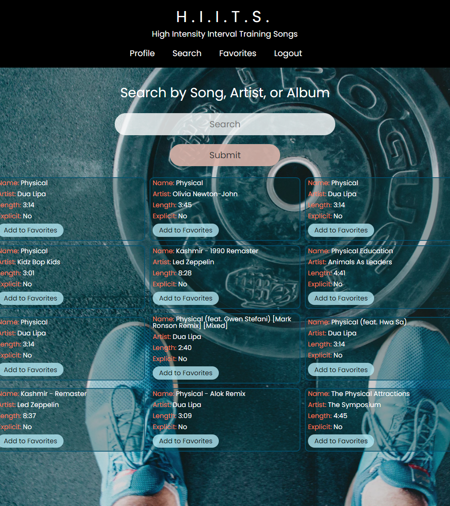

H.I.I.T.S.
Node.js, Express, JavaScript, CSS, EJS, PostgreSQL
Role: Full Stack Developer
Tired of the same old songs played at the gym? Wish there was a way for members to let owners know what songs they wanted to hear while getting ripped?
H.I.I.T.S. (High Intensity Interval Training Songs) allows registered users to find songs via the Spotify API and add them to a favorite's list. Administrators see a collective list of all user's selections to make informed playlist decisions.
The app utilizes CRUD routes, with favorite's saved to a PostgreSQL database.
To view a populated test account, use the following credentials: email: test@email.com | password: test1234 